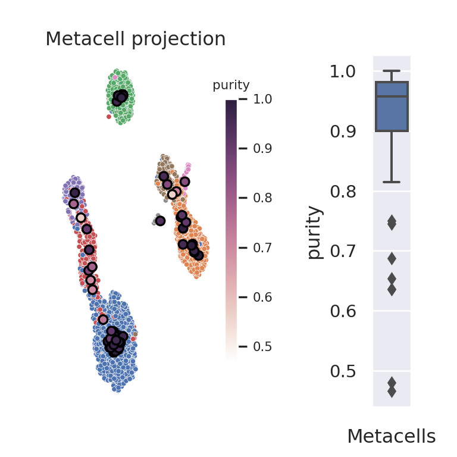
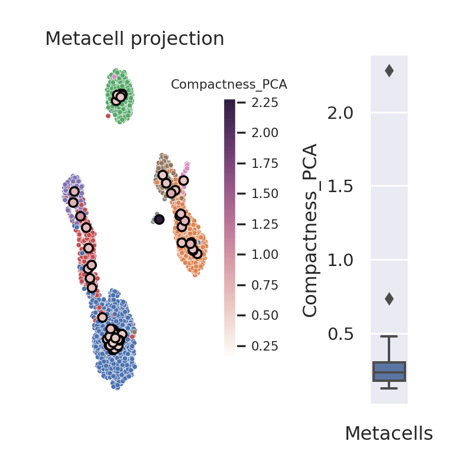
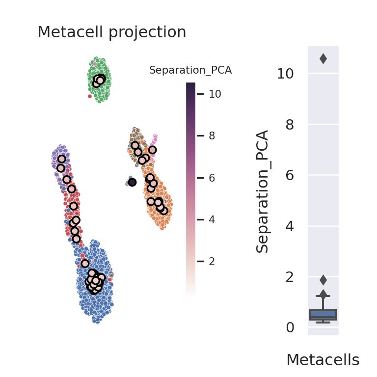

3.2 MC2 (Python)
In this section, we construct metacells using Metacell-2 (MC2). The code is adapted from the author’s tutorial. For more information on the method, please refer to the section 1 of chapter 2.
Importing python packages
To run Metacell-2, the following python packages need to be imported:
import os
import numpy as np
import pandas as pd
import anndata as ad
import scanpy as sc
import matplotlib.pyplot as plt
import seaborn as sns
import metacells as mcimport sys
sys.path.append('./mc_QC/')
import mc_QCIf you don’t have these packages installed, please refer to the section 2 of chapter 1.
3.2.1 Data loading
We will run Metacell-2 (MC2) on a single-cell dataset composed of XX peripheral blood mononuclear cells (PBMCs). Please follow the section 4 from Chapter 1 to retrieve these data from the scanpy package and save the data in the following file: “data/3k_pbmc/singlecell_anndata_filtered.h5ad”.
MC_tool = "MC2"
proj_name = "3k_pbmc"
ad = sc.read(os.path.join("data", proj_name, "singlecell_anndata_filtered.h5ad"))
# MC_tool = "MC2"
# proj_name = "CD34"
# ad = sc.read(os.path.join("data", "CD34", "cd34_multiome_rna.h5ad"))We initialize the name of the anndata (in the unstructured annotations) object using the mc.ut.set_name() function from the MC2 package.
mc.ut.set_name(ad, proj_name)3.2.2 Filtering steps
MC2 requires that standard filtering steps such as doublet filtering is performed outside of the MC2 framework. In addition to standard data filtering steps, the MC2 package proposes functions to filter the single-cell data at the gene and at the cell level (See original vignette). At the gene level, the filtering steps consist in excluding genes based on biological knowledge (e.g. mitochrondrial genes) as well as based on their expression levels. The latter genes include genes with zero expression or low expression levels and “bursty lonely genes” (i.e., genes with high expression levels but no correlation with any other gene). At the cell level, filtering is performed based on cells UMI counts.
Gene filtering
In section XX form Chapter XX, we pre-processed the raw scRNA-Seq data and excluded genes with low expression as well as mitochondrial genes.
In the following code chunk, we exclude additional genes using the mc.pl.exclude_genes()function from the MC2 package.
Based on the authors vignette, we provide a minimal list of genes to exclude, i.e., sex-specific and non-coding genes. To complete this list of genes, an iterative approach can be used following the guidelines of the MC2 authors in a second vignette.
The mc.pl.exclude_genes()function will filter out: i) the known-to-be-excluded genes defined by the user as gene names or gene names patterns (EXCLUDED_GENE_NAMES and EXCLUDED_GENE_PATTERNS parameters respectively),
and ii) the “bursty lonely genes”.
EXCLUDED_GENE_NAMES = ["XIST", "MALAT1", "NEAT1"]
EXCLUDED_GENE_PATTERNS = ['MT-.*']
mc.pl.exclude_genes(
ad,
excluded_gene_names=EXCLUDED_GENE_NAMES,
excluded_gene_patterns=EXCLUDED_GENE_PATTERNS,
random_seed=123456
)
#> set 3k_pbmc.var[bursty_lonely_gene]: 0 true (0%) out of 32738 bools
#> set 3k_pbmc.var[properly_sampled_gene]: 16579 true (50.64%) out of 32738 bools
#> set 3k_pbmc.var[excluded_gene]: 16174 true (49.4%) out of 32738 boolsCell filtering based on UMIs counts
In the MC2 framework, cells with very low and very high UMI content will be filtered out (PROPERLY_SAMPLED_MIN_CELL_TOTAL, PROPERLY_SAMPLED_MAX_CELL_TOTAL variables defining thresholds in the next code chunk).
Also, cell filtering based on UMI counts in excluded genes is also performed(PROPERLY_SAMPLED_MAX_EXCLUDED_GENES_FRACTION variable).
Since our dataset has been pre-filtered, very lenient cutoffs will be used in this tutorial.
The following code chunk defines these parameters. To adapt them to your datasets, we advise you to explore the distributions of total UMI counts and UMI counts in excluded genes, as recommended and described in the MC2 original vignette.
PROPERLY_SAMPLED_MIN_CELL_TOTAL = 200
PROPERLY_SAMPLED_MAX_CELL_TOTAL = 10000
PROPERLY_SAMPLED_MAX_EXCLUDED_GENES_FRACTION = 0.25The number of UMIs in excluded genes is computed using the mc.tl.compute_excluded_gene_umis() function and cells are filtered out using the mc.pl.exclude_cells() function.
Additional cells can be filtered out by adding a cell description columns in the obs data frame in the anndata oject. This annotation should be a boolean indicating whether the cell should filtered out or not.
The name of this column should be provided to the mc.pl.exclude_cells() function via the additional_cells_masks parameter.
mc.tl.compute_excluded_gene_umis(ad)
mc.pl.exclude_cells(
ad,
properly_sampled_min_cell_total=PROPERLY_SAMPLED_MIN_CELL_TOTAL,
properly_sampled_max_cell_total=PROPERLY_SAMPLED_MAX_CELL_TOTAL,
properly_sampled_max_excluded_genes_fraction=PROPERLY_SAMPLED_MAX_EXCLUDED_GENES_FRACTION # ,
# additional_cells_masks=["|doublet_cell"]
)
#> set 3k_pbmc.obs[properly_sampled_cell]: 2638 true (100%) out of 2638 bools
#> set 3k_pbmc.obs[excluded_cell]: 0 true (0%) out of 2638 boolsAfter performing the two-step filtering (genes and cells), the “cleaned” data can be extracted using the mc.pl.extract_clean_data() function.
# Extract clean dataset (with filtered cells and genes)
ad = mc.pl.extract_clean_data(ad)
#> set 3k_pbmc.clean.obs[full_cell_index]: 2638 int32s
#> set 3k_pbmc.clean.var[full_gene_index]: 16564 int32s3.2.3 Building metacells
Defining lateral genes
To build metacells, we need to define lateral genes, which are genes with strong biological signal which is independent of cell-state, e.g. cell-cycle genes.
These genes will be ignored for computing cells similarity and build metacells
but will be considered to define outlier cells (i.e., expression levels of lateral genes should be consistent within metacells).
In the following chunk, we consider a minimal list of lateral genes including cell-cycle and ribosomal genes and mark them in the MC2 object using the mc.pl.mark_lateral_genes() function.
LATERAL_GENE_NAMES = [
"AURKA", "MCM3", "MCM4", "MCM7", "MKI67", "PCNA", "RRM2", "SMC4", "TPX2", # Cell-cycle
"FOS", "HSP90AB1", "TXN", # Stress
]
LATERAL_GENE_PATTERNS = ["RP[LS].*"] # Ribosomal
# This will mark as "lateral_gene" any genes that match the above, if they exist in the clean dataset.
mc.pl.mark_lateral_genes(
ad,
lateral_gene_names=LATERAL_GENE_NAMES,
lateral_gene_patterns=LATERAL_GENE_PATTERNS,
)
#> set 3k_pbmc.clean.var[lateral_gene]: 111 true (0.6701%) out of 16564 boolsSome genes have higher variances that expected which could lead to false positive outlier identification.
Users can mark those genes as noisy genes using the mc.pl.mark_noisy_genes() function.
NOISY_GENE_NAMES = [
"CCL3", "CCL4", "CCL5", "CXCL8", "DUSP1", "FOS", "G0S2", "HBB", "HIST1H4C", "IER2", "IGKC",
"IGLC2", "JUN", "JUNB", "KLRB1", "MT2A", "RPS26", "RPS4Y1", "TRBC1", "TUBA1B", "TUBB"
]
# This will mark as "noisy_gene" any genes that match the above, if they exist in the clean dataset.
mc.pl.mark_noisy_genes(ad, noisy_gene_names=NOISY_GENE_NAMES)
#> set 3k_pbmc.clean.var[noisy_gene]: 17 true (0.1026%) out of 16564 boolsTo extend this list of lateral genes, users can use the `` function to identify genes that are highly correlated with the predefined lateral genes.
Estimate target_metacell_size (gamma)
By default, MC2 will build metacells with a size of 96 cells per metacells.
Users can vary the target_metacell_size parameter to reach a desired graining level.
gamma = 50 # graining level
target_metacell_size = round(ad.shape[0]/gamma)
target_metacell_size
#> 53Metacells identification using the divide and conquer approach
The construction of metacells by MC2 is performed using the mc.pl.divide_and_conquer_pipeline() function.
Note that by default all cores of the system will be used for the metacells construction.
To change this behavior and adapt the number of cores the MC2 authors propose to use the mc.pl.guess_max_parallel_piles() and mc.pl.set_max_parallel_piles() functions to adapt the number of processed in parallel depending on the available memory.
max_parallel_piles = mc.pl.guess_max_parallel_piles(ad)
mc.pl.set_max_parallel_piles(max_parallel_piles)
mc.pl.divide_and_conquer_pipeline(
ad,
target_metacell_size = target_metacell_size,
random_seed = 123456)
#> set 3k_pbmc.clean.var[selected_gene]: * -> False
#> set 3k_pbmc.clean.var[rare_gene]: 0 true (0%) out of 16564 bools
#> set 3k_pbmc.clean.var[rare_gene_module]: 16564 int32 elements with all outliers (100%)
#> set 3k_pbmc.clean.obs[cells_rare_gene_module]: 2638 int32 elements with all outliers (100%)
#> set 3k_pbmc.clean.obs[rare_cell]: 0 true (0%) out of 2638 bools
#> set 3k_pbmc.clean.var[selected_gene]: 295 true (1.781%) out of 16564 bools
#> set 3k_pbmc.clean.obs[metacell]: 2638 int32s
#> set 3k_pbmc.clean.obs[dissolved]: 14 true (0.5307%) out of 2638 bools
#> set 3k_pbmc.clean.obs[metacell_level]: 2638 int32s
ad.obs.metacell.head
#> <bound method NDFrame.head of index
#> AAACATACAACCAC-1 30
#> AAACATTGAGCTAC-1 31
#> AAACATTGATCAGC-1 49
#> AAACCGTGCTTCCG-1 13
#> AAACCGTGTATGCG-1 -1
#> ..
#> TTTCGAACTCTCAT-1 43
#> TTTCTACTGAGGCA-1 25
#> TTTCTACTTCCTCG-1 57
#> TTTGCATGAGAGGC-1 16
#> TTTGCATGCCTCAC-1 49
#> Name: metacell, Length: 2638, dtype: int32>Retrieve aggregated metacell data
The mc.pl.divide_and_conquer_pipeline() function associates each cell to a metacell or defines the cell as outlier. These assignments are found in the obs layer of the anndata object
The function mc.pl.collect_metacells() should be used to subsequently retrieve an anndata object containing the data at the metacells level instead of the single-cell level.
This function will store in the X data matrix of the anndata object a matrix of gene fraction, i.e., the sum of all gene levels in a metacell sums to 1
and it will store the total UMIs per gene per metacell in the layer total_umis.
mc_ad = mc.pl.collect_metacells(ad, name='metacells', random_seed = 123456)
#> set metacells.obs[grouped]: 62 int64s
#> set metacells.obs[total_umis]: 62 float64s
#> set metacells.layers[total_umis]: ndarray 62 X 16564 float32s
#> set metacells.obs[__zeros_downsample_umis]: 62 int64s
#> set metacells.layers[zeros]: ndarray 62 X 16564 int32s
#> set 3k_pbmc.clean.obs[metacell_name]: 2638 <U8s
#> set metacells.var[gene_ids]: 16564 objects
#> set metacells.var[bursty_lonely_gene]: 0 true (0%) out of 16564 bools
#> set metacells.var[properly_sampled_gene]: 16564 true (100%) out of 16564 bools
#> set metacells.var[excluded_gene]: 0 true (0%) out of 16564 bools
#> set metacells.var[full_gene_index]: 16564 int32s
#> set metacells.var[lateral_gene]: 111 true (0.6701%) out of 16564 bools
#> set metacells.var[noisy_gene]: 17 true (0.1026%) out of 16564 bools
#> set metacells.var[selected_gene]: 295 true (1.781%) out of 16564 bools
#> set metacells.var[rare_gene]: 0 true (0%) out of 16564 bools
#> set metacells.var[rare_gene_module]: 16564 int32s
#> set metacells.obs[metacells_rare_gene_module]: 62 int32s
#> set metacells.obs[rare_metacell]: 0 true (0%) out of 62 bools
#> set metacells.uns[outliers]: 158
#> set metacells.uns[metacells_algorithm]: metacells.0.9.0
mc_ad.shape
#> (62, 16564)
mc_ad.X.sum(axis=1)[:5]
#> matrix([[1.],
#> [1.],
#> [1.],
#> [1.],
#> [1.]], dtype=float32)
mc_ad.layers['total_umis']
#> array([[0., 0., 0., ..., 0., 1., 0.],
#> [0., 0., 0., ..., 0., 6., 1.],
#> [0., 0., 0., ..., 0., 2., 1.],
#> ...,
#> [0., 0., 0., ..., 0., 3., 0.],
#> [0., 0., 0., ..., 0., 1., 1.],
#> [0., 0., 0., ..., 0., 2., 0.]], dtype=float32)Comparing the obtained and requested graining level
In the following code chunk, we estimate whether a deviation of the obtained gamma from the requested gamma is acceptable. If not, we suggest to increase or decrease the target_metacell_size parameter to approach the desired graining level.
gamma_obtained = ad.shape[0]/mc_ad.shape[0]
print(gamma_obtained)
#> 42.54838709677419
gamma_dev = (gamma_obtained - gamma)/gamma
if abs(gamma_dev) < 0.3:
gamma_dev = 0
if gamma_dev < 0:
print("Increase `target_metacell_size` parameter by increasing `scale` and re-run metacell divide_and_conquer_pipeline() to get larger graining level")
elif gamma_dev > 0:
print("Deacrease `target_metacell_size` parameter by decreasing `scale` and re-run metacell divide_and_conquer_pipeline() to get smaller graining level")
elif gamma_dev == 0:
print("The obtained graining level is acceptable, no need to re-run the metacell divide_and_conquer_pipeline() with a new `target_metacell_size` ")
#> The obtained graining level is acceptable, no need to re-run the metacell divide_and_conquer_pipeline() with a new `target_metacell_size`3.2.4 Visualize metacells
If single-cell annotations are available in the original single-cell anndata object. We can transfer these annotations to the metacell anndata object
using the mc.tl.convey_obs_to_group() function which will associate each metacell to the most frequent annotation (categorical) or averaged annotation (continuous) across the single-cells composing the metacell
(use of the mc.ut.most_frequent and np.mean respectively in the mode paratemer).
# Assign a single value for each metacell based on the cells.
mc.tl.convey_obs_to_group(
adata=ad, gdata=mc_ad,
property_name="louvain", to_property_name="annotation",
method=mc.ut.most_frequent # This is the default, for categorical data
)
#> set metacells.obs[annotation]: 62 <U17s
# Compute the fraction of cells with each possible value in each metacell:
mc.tl.convey_obs_fractions_to_group(
adata=ad, gdata=mc_ad,
property_name="louvain", to_property_name="annotation"
)
#> set metacells.obs[annotation_fraction_of_B cells]: 62 float64s
#> set metacells.obs[annotation_fraction_of_CD14+ Monocytes]: 62 float64s
#> set metacells.obs[annotation_fraction_of_CD4 T cells]: 62 float64s
#> set metacells.obs[annotation_fraction_of_CD8 T cells]: 62 float64s
#> set metacells.obs[annotation_fraction_of_Dendritic cells]: 62 float64s
#> set metacells.obs[annotation_fraction_of_FCGR3A+ Monocytes]: 62 float64s
#> set metacells.obs[annotation_fraction_of_Megakaryocytes]: 62 float64s
#> set metacells.obs[annotation_fraction_of_NK cells]: 62 float64sThe following code chunk adds a columns named membership and containing the single_cell assignments to the obs attribute in the anndata object containing the raw data.
This annotation will be used in the mc_QC package to compute metacells quality metrics. We also save the single-cell metadata in the metacell anndata object.
# make a membership -- index of metacells to which single cells belong to
ad.obs['membership'] = [int(i)+1 if i >= 0 else np.nan for i in ad.obs.metacell]
## Save single-cell metadata (i.e., `raw.obs` dataframe) in the metacell adata object
mc_ad.uns = ad.uns.copy()
mc_ad.uns['sc.obs'] = ad.obs.copy()
# save the requested gamma
mc_ad.uns['gamma'] = gammaCompute latent space for metacell QC
To visualize the metacells, we can project the metacells on the single-cell UMAP representation. To run UMAP, we will generate in the next code chunk a lower-dimentional embedding of the data, so far not needed since the MC2 methods builds metacells from gene expression data and not from latent space. Also, note that some of the QC metrics (e.g., compactness and separation), that we will compute in the next section of this tutorial, are computed from this latent space.
# Save count as a separate layer
ad.layers['counts'] = ad.X
# Copy the counts to ".raw" attribute of the anndata since it is necessary for downstream analysis
# This step should be performed after filtering
raw_ad = sc.AnnData(ad.layers['counts'])
raw_ad.obs_names, raw_ad.var_names = ad.obs_names, ad.var_names
ad.raw = raw_ad
# Normalize cells, log transform and compute highly variable genes
sc.pp.normalize_per_cell(ad)
sc.pp.log1p(ad)
sc.pp.highly_variable_genes(ad, n_top_genes=1000)
# Compute principal components -
n_comp = 10
sc.tl.pca(ad, n_comps=n_comp, use_highly_variable=True)
# Compute UMAP for visualization
sc.pp.neighbors(ad, n_neighbors=10, n_pcs=n_comp)
sc.tl.umap(ad)To visualize the metacell projection on the single-cell UMAP, we use the mc_visualize function from the mc_QC, this function was adapted from the plot.plot_2D included in the SEACells package.
mc_proj = mc_QC.mc_visualize(ad, key='X_umap', group_by_name='membership', colour_sc_name='louvain', colour_mc_name='membership', colour_metacells=True, legend_sc=None, legend_mc=None)
#> No artists with labels found to put in legend. Note that artists whose label start with an underscore are ignored when legend() is called with no argument.
mc_proj.show()
3.2.5 Metacell QC
Compute purity, compactness and separation metrics
Size distribution
#mc_size = SEACells.plot.plot_SEACell_sizes(ad, bins=20)
#mc_ad.obs = pd.merge(mc_ad.obs, mc_size, left_index=True, right_index=True)
#mc_ad.obsWhen available, we can use cell annotation to annotate each metacell to the most abundant cell category (e.g. cell type) composing the metacell. This also allows us to compute metacell purity. If the annotation considered is the cell type, the purity of a metacell is the proportion of the most abundant cell type within the metacell [ref SuperCell]
mc_purity = mc_QC.purity(ad, annotation_label, MC_label = 'membership')
mc_purity.head()
#> louvain louvain_purity
#> membership
#> 1.0 CD14+ Monocytes 1.000000
#> 2.0 CD8 T cells 0.884058
#> 3.0 CD4 T cells 0.897436
#> 4.0 CD14+ Monocytes 1.000000
#> 5.0 CD4 T cells 1.000000
# add purity to metadata
mc_ad.obs['purity'] = list(mc_purity[annotation_label + "_purity"])The compactness of a metacell is the variance of the components within the metacell [ref SEACells]
compactness = mc_QC.compactness(ad, 'X_pca', MC_label = 'membership', DO_DC = False, name = 'Compactness_PCA', n_comp=10)['Compactness_PCA']
# add compactness to metadata
mc_ad.obs['Compactness_PCA'] = list(compactness)The separation of a metacell is the distance to the closest metacell [ref SEACells]
separation = mc_QC.separation(ad, 'X_pca', MC_label = 'membership', DO_DC = False, name = 'Separation_PCA', n_comp=10)['Separation_PCA']
# add separation to metadata
mc_ad.obs['Separation_PCA'] = list(separation)The inner normalized variance (INV) of a metacell is the mean-normalized variance of gene expression within the metacell [ref MC-2]
mc_INV = mc_QC.mc_inner_normalized_var(ad=ad, MC_label = 'membership')
mc_INV_val = mc_INV.quantile(0.95, axis=1, numeric_only=True)
mc_INV_val = pd.DataFrame(mc_INV_val.transpose()).set_axis(['INV'], axis=1, copy=False)
# add INV to metadata
mc_ad.obs['INV'] = list(mc_INV_val["INV"])ad.uns['mc_obs'] = mc_ad.obs
mc_QC.mc_visualize_continuous(ad, key='X_umap', group_by_name='membership',
colour_sc_name='louvain', colour_mc_name='purity', colour_metacells=True,
legend_sc=None, legend_mc='auto', metacell_size=30)
mc_QC.mc_visualize_continuous(ad, key='X_umap', group_by_name='membership',
colour_sc_name='louvain', colour_mc_name='Compactness_PCA', colour_metacells=True,
legend_sc=None, legend_mc='auto', metacell_size=30) 
mc_QC.mc_visualize_continuous(ad, key='X_umap', group_by_name='membership',
colour_sc_name='louvain', colour_mc_name='Separation_PCA', colour_metacells=True,
legend_sc=None, legend_mc='auto', metacell_size=30) 
# mc_QC.mc_visualize_continuous(ad, key='X_umap', group_by_name='membership',
# colour_sc_name='louvain', colour_mc_name='INV', colour_metacells=True,
# legend_sc=None, legend_mc='auto', metacell_size=30)